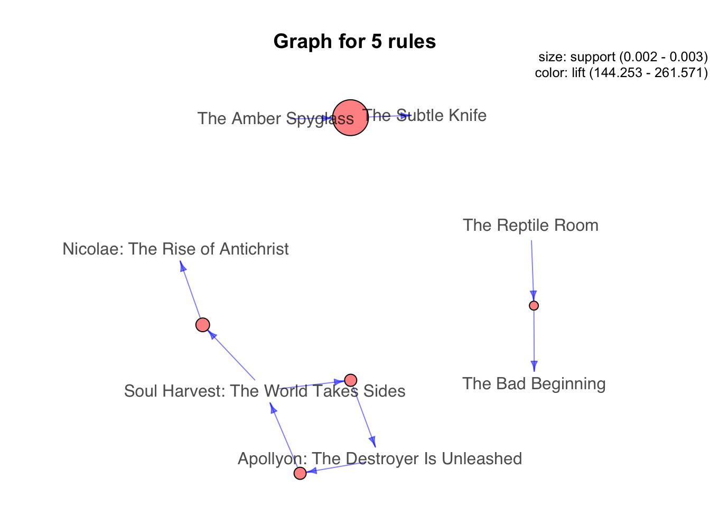

Let’s see what an association rule exactly looks like. It consists of an antecedent and a consequent, both of which are a list of items. Note that implication here is co-occurrence and not causality. For a given rule, itemset is the list of all the items in the antecedent and the consequent.
This measure gives an idea of how frequent an itemset is in all the transactions. Consider itemset1 = {bread} and itemset2 = {shampoo}. There will be far more transactions containing bread than those containing shampoo. So as you rightly guessed, itemset1 will generally have a higher support than itemset2. Now consider itemset1 = {bread, butter} and itemset2 = {bread, shampoo}. Many transactions will have both bread and butter on the cart but bread and shampoo? Not so much. So in this case, itemset1 will generally have a higher support than itemset2. Mathematically, support is the fraction of the total number of transactions in which the itemset occurs.
Value of support helps us identify the rules worth considering for further analysis. For example, one might want to consider only the itemsets which occur at least 50 times out of a total of 10,000 transactions i.e. support = 0.005. If an itemset happens to have a very low support, we do not have enough information on the relationship between its items and hence no conclusions can be drawn from such a rule.
This measure defines the likeliness of occurrence of consequent on the cart given that the cart already has the antecedents. That is to answer the question — of all the transactions containing say, {Captain Crunch}, how many also had {Milk} on them? We can say by common knowledge that {Captain Crunch} → {Milk} should be a high confidence rule. Technically, confidence is the conditional probability of occurrence of consequent given the antecedent.
Confidence({X}->{Y}) = P(Y|X) / P(X)
Let us consider few more examples before moving ahead. What do you think would be the confidence for {Butter} → {Bread}? That is, what fraction of transactions having butter also had bread? Very high i.e. a value close to 1? That’s right. What about {Yogurt} → {Milk}? High again. {Toothbrush} → {Milk}? Not so sure? Confidence for this rule will also be high since {Milk} is such a frequent itemset and would be present in every other transaction.
It does not matter what you have in the antecedent for such a frequent consequent. The confidence for an association rule having a very frequent consequent will always be high.
Consider the numbers from the figure. Confidence for {Toothbrush} → {Milk} will be 10/(10+4) = 0.7
Looks like a high confidence value. But we know intuitively that these two products have a weak association and there is something misleading about this high confidence value. Lift is introduced to overcome this challenge.
Considering just the value of confidence limits our capability to make any business inference.
Lift controls the support (frequency) of consequent while calculating the conditional probability of occurrence of {Y} given {X}. Lift is a very literal term given to this measure. Think of it as the lift that {X} provides to our confidence for having {Y} on the cart. To rephrase, lift is the rise in probability of having {Y} on the cart with the knowledge of {X} being present over the probability of having {Y} on the cart without any knowledge about presence of {X}. Mathematically,
Lift = Confidence({X}->{Y}) / P(Y) = (P(Y|X) / P(X)) / P(Y) = P(Y|X) / P(X)P(Y)
In cases where {X} actually leads to {Y} on the cart, value of lift will be greater than 1. Let us understand this with an example which will be continuation of the {Toothbrush} → {Milk} rule. Probability of having milk on the cart with the knowledge that toothbrush is present (i.e. confidence) : 10/(10+4) = 0.7
Now to put this number in perspective, consider the probability of having milk on the cart without any knowledge about toothbrush: 80/100 = 0.8
These numbers show that having toothbrush on the cart actually reduces the probability of having milk on the cart to 0.7 from 0.8! This will be a lift of 0.7/0.8 = 0.87. Now that’s more like the real picture. A value of lift less than 1 shows that having toothbrush on the cart does not increase the chances of occurrence of milk on the cart in spite of the rule showing a high confidence value. A value of lift greater than 1 vouches for high association between {Y} and {X}. More the value of lift, greater are the chances of preference to buy {Y} if the customer has already bought {X}. Lift is the measure that will help store managers to decide product placements on aisle.
Now that we understand how to quantify the importance of association of products within an itemset, the next step is to generate rules from the entire list of items and identify the most important ones. This is not as simple as it might sound. Supermarkets will have thousands of different products in store. After some simple calculations, it can be shown that just 10 products will lead to 57000 rules!! And this number increases exponentially with the increase in number of items. Finding lift values for each of these will get computationally very very expensive. How to deal with this problem? How to come up with a set of most important association rules to be considered? Apriori algorithm comes to our rescue for this.
First step in generation of association rules is to get all the frequent itemsets on which binary partitions can be performed to get the antecedent and the consequent. For example, if there are 6 items {Bread, Butter, Egg, Milk, Notebook, Toothbrush} on all the transactions combined, itemsets will look like {Bread}, {Butter}, {Bread, Notebook}, {Milk, Toothbrush}, {Milk, Egg, Vegetables} etc. Size of an itemset can vary from one to the total number of items that we have. Now, we seek only frequent itemsets from this and not all so as to put a check on the number of total itemsets generated.
Frequent itemsets are the ones which occur at least a minimum number of times in the transactions. Technically, these are the itemsets for which support value (fraction of transactions containing the itemset) is above a minimum threshold — minsup.
A brute force approach to find frequent itemsets is to form all possible itemsets and check the support value of each of these. Apriori principle helps in making this search efficient. It states that:
This is equivalent to saying that number of transactions containing items {Bread, Egg} is greater than or equal to number of transactions containing {Bread, Egg, Vegetables}. If the latter occurs in 30 transactions, former is occurring in all 30 of them and possibly will occur in even some more transactions. So if support value of {Bread, Egg, Vegetables} (30/100) = 0.3 is above minsup, then we can be assured that support value of {Bread, Egg} i.e. (>30/100) = >0.3 is above minsup too. This is called the anti-monotone property of support where if we drop out an item from an itemset, support value of new itemset generated will either be the same or will increase.
Apriori principle allows us to prune all the supersets of an itemset which does not satisfy the minimum threshold condition for support. For example, if {Milk, Notebook} does not satisfy our threshold of minsup, an itemset with any item added to this will never cross the threshold too.
The methodology that results is called the apriori algorithm. Steps involved are:
Generate all frequent itemsets (support ≥ minsup) having only one item. Next, generate itemsets of length 2 as all possible combinations of above itemsets. Then, prune the ones for which support value fell below minsup.
Now generate itemsets of length 3 as all possible combinations of length 2 itemsets (that remained after pruning) and perform the same check on support value.
We keep increasing the length of itemsets by one like this and check for the threshold at each step. Pruning of infrequent itemsets reduces the number of itemsets to be considered by more than half! This proportion of reduction in computational power becomes more and more significant as the number of items increases.
This proportion also depends on the minimum support threshold (minsup) that we pick up which is completely subjective to the problem at hand and can be based on past experience.
Once the frequent itemsets are generated, identifying rules out of them is comparatively less taxing. Rules are formed by binary partition of each itemset. If {Bread,Egg,Milk,Butter} is the frequent itemset, candidate rules will look like:
(Egg, Milk, Butter → Bread), (Bread, Milk, Butter → Egg), (Bread, Egg → Milk, Butter), (Egg, Milk → Bread, Butter), (Butter→ Bread, Egg, Milk)
From a list of all possible candidate rules, we aim to identify rules that fall above a minimum confidence level (minconf). Just like the anti-monotone property of support, confidence of rules generated from the same itemset also follows an anti-monotone property. It is anti-monotone with respect to the number of elements in consequent.
This means that confidence of (A,B,C→ D) ≥ (B,C → A,D) ≥ (C → A,B,D). To remind, confidence for {X → Y} = support of {X,Y}/support of {X}
We can see that support of all the rules generated from same itemset remains the same and the difference occurs only in the denominator calculation of confidence. As number of items in X decrease, support{X} increases (as follows from the anti-monotone property of support) and hence the confidence value decreases.
An intuitive explanation for the above will be as follows. Consider F1 and F2:
F1 = fraction of transactions having (butter) also having (egg, milk, bread)
There will be many transactions having butter and all three of egg, milk and bread will be able to find place only in a small number of those.
F2 = fraction of transactions having (milk, butter, bread) also having (egg)
There will only be a handful of transactions having all three of milk, butter and bread (as compared to having just butter) and there will be high chances of having egg on those.
So it will be observed that F1 < F2. Using this property of confidence, pruning is done in a similar way as was done while looking for frequent itemsets. It is illustrated in the figure below.
We start with a frequent itemset {a,b,c,d} and start forming rules with just one consequent. Remove the rules failing to satisfy the minconf condition. Now, start forming rules using a combination of consequents from the remaining ones. Keep repeating until only one item is left on antecedent. This process has to be done for all frequent itemsets.
Here again, minimum confidence threshold that we pick up is completely subjective to the problem at hand.
With these two steps, we have identified a set of association rules which satisfy both the minimum support and minimum confidence condition. The number of such rules obtained will vary with the values of minsup and minconf. Now, this subset of rules thus generated can be searched for highest values of lift to make business decisions. There are some nicely built libraries in R to fetch association rules from transactions by putting in minsup and minconf as parameters. They also provide capabilities to visualize the same.
Maximal frequent itemset: It is a frequent itemset for which none of the immediate supersets are frequent. This is like a frequent itemset X to which no item y can be added such that {X,y} still remains above minsup threshold.
You can read zipped files into R without unzipping or downloading the file from the web in advance. Use the gz(), bz(), unz(), or url() commands. For example:
zz=gzfile('file.csv.gz','rt')
dat=read.csv(zz,header=F)
library(arules)## Loading required package: Matrix##
## Attaching package: 'arules'## The following objects are masked from 'package:base':
##
## abbreviate, writebookbaskets <- read.transactions("bookdata.tsv.gz",
format="single",
sep="\t",
cols=c("userid", "title"),
rm.duplicates=T,
header=TRUE)The object is of class transactions:
class(bookbaskets)## [1] "transactions"
## attr(,"package")
## [1] "arules"Printing the object tells you its dimensions:
bookbaskets## transactions in sparse format with
## 92108 transactions (rows) and
## 220447 items (columns)Also, dim can be used:
dim(bookbaskets)## [1] 92108 220447The columns are labeled by book title: (The transactions for Arules algorithm are organized as a sparse matrix: columns are book titles, rows are customers’ ids. The binary 0/1 designate their basket choices.)
colnames(bookbaskets)[1:5]## [1] " A Light in the Storm: The Civil War Diary of Amelia Martin, Fenwick Island, Delaware, 1861"
## [2] " Always Have Popsicles"
## [3] " Apple Magic"
## [4] " Ask Lily"
## [5] " Beyond IBM: Leadership Marketing and Finance for the 1990s"The rows are labeled by customer:
rownames(bookbaskets)[1:5]## [1] "10" "1000" "100001" "100002" "100004"You can examine the distribution of transaction sizes (or basket sizes) with the function size():
basketSizes <- size(bookbaskets)
summary(basketSizes)## Min. 1st Qu. Median Mean 3rd Qu. Max.
## 1.0 1.0 1.0 11.1 4.0 10253.0Most customers (at least half of them, in fact) only expressed interest in one book. But someone has expressed interest in more than 10,000! You probably want to look more closely at the size distribution to see what’s going on.
quantile(basketSizes, probs=seq(0,1,0.1))## 0% 10% 20% 30% 40% 50% 60% 70% 80% 90% 100%
## 1 1 1 1 1 1 2 3 5 13 10253quantile(basketSizes, probs=c(0.99, 1))## 99% 100%
## 179 10253library(ggplot2)
ggplot(data.frame(count=basketSizes)) +
geom_density(aes(x=count), binwidth=1) +
scale_x_log10()## Warning: Ignoring unknown parameters: binwidthLook at the first 5 transactions:
inspect(bookbaskets[1:5])## items transactionID
## [1] {New Vegetarian: Bold and Beautiful Recipes for Every Occasion} 10
## [2] {Il Dio Delle Piccole Cose} 1000
## [3] {Cybernation} 100001
## [4] {Lasher: Lives of the Mayfair Witches} 100002
## [5] {Chicken Soup for the Teenage Soul on Tough Stuff : Stories of Tough Times and Lessons Learned,
## Dragon Ball Z, Vol. 1,
## Harry Potter and the Chamber of Secrets,
## Harry Potter and the Sorcerer's Stone,
## Holes,
## Prey,
## Primary Colors: A Novel of Politics,
## Rising Sun,
## The Cat Who Smelled a Rat,
## The Fellowship of the Ring,
## The Hunt for Red October,
## The Return of the King,
## The Two Towers} 100004Which books are they reading? The function itemFrequency() will give you the relative frequency of each book in the transaction data:
bookFreq <- itemFrequency(bookbaskets)
summary(bookFreq)## Min. 1st Qu. Median Mean 3rd Qu. Max.
## 1.086e-05 1.086e-05 1.086e-05 5.035e-05 3.257e-05 2.716e-02sum(bookFreq)## [1] 11.09909Note that the frequencies don’t sum to 1. You can recover the number of times that each book occurred in the data by normalizing the item frequencies and multiplying by the total number of items.
Finding the ten most frequent books:
# Get the absolute count of book occurrences
bookCount <- (bookFreq/sum(bookFreq))*sum(basketSizes)
summary(bookCount)## Min. 1st Qu. Median Mean 3rd Qu. Max.
## 1.000 1.000 1.000 4.638 3.000 2502.000orderedBooks <- sort(bookCount, decreasing = T)
orderedBooks[1:10]## Wild Animus
## 2502
## The Lovely Bones: A Novel
## 1295
## She's Come Undone
## 934
## The Da Vinci Code
## 905
## Harry Potter and the Sorcerer's Stone
## 832
## The Nanny Diaries: A Novel
## 821
## A Painted House
## 819
## Bridget Jones's Diary
## 772
## The Secret Life of Bees
## 762
## Divine Secrets of the Ya-Ya Sisterhood: A Novel
## 737The most popular book in the dataset occurred in fewer than 3% of the baskets:
orderedBooks[1]/dim(bookbaskets)[1]## Wild Animus
## 0.02716376The last observation in the preceding listing highlights one of the issues with mining high-dimensional data: when you have thousands of variables, or thousands of items, almost every event is rare. Keep this point in mind when deciding on support thresholds for rule mining; your thresholds will often need to be quite low.
Before we get to the rule mining, let’s refine the data a bit more. As we observedearlier, half of the customers in the data only expressed interest in a single book. Since you want to find books that occur together in people’s interest lists, you can’t make any direct use of people who haven’t yet shown interest in multiple books. You can restrict the dataset to customers who have expressed interest in at least two books:
bookbaskets_use <- bookbaskets[basketSizes > 1]
dim(bookbaskets_use)## [1] 40822 220447Now you’re ready to look for association rules.
In order to mine rules, you need to decide on a minimum support level (minsup) and a minimum threshold level (minconf). For this example, let’s try restricting the itemsets that we’ll consider to those that are supported by at least 100 people. This leads to a minimum support of 100/dim(bookbaskets_use)[1] = 100/40822. This is about 0.002, or 0.2%. We’ll use a confidence threshold (minconf) of 75%.
minsup = 0.002
minconf = 0.75
rules <- apriori(bookbaskets_use,
parameter =list(support = 0.002, confidence=0.75))## Apriori
##
## Parameter specification:
## confidence minval smax arem aval originalSupport maxtime support minlen
## 0.75 0.1 1 none FALSE TRUE 5 0.002 1
## maxlen target ext
## 10 rules FALSE
##
## Algorithmic control:
## filter tree heap memopt load sort verbose
## 0.1 TRUE TRUE FALSE TRUE 2 TRUE
##
## Absolute minimum support count: 81
##
## set item appearances ...[0 item(s)] done [0.00s].
## set transactions ...[216031 item(s), 40822 transaction(s)] done [1.20s].
## sorting and recoding items ... [1256 item(s)] done [0.04s].
## creating transaction tree ... done [0.02s].
## checking subsets of size 1 2 3 4 5 done [0.06s].
## writing ... [191 rule(s)] done [0.00s].
## creating S4 object ... done [0.07s].The summary of the apriori() output reports the number of rules found:
summary(rules)## set of 191 rules
##
## rule length distribution (lhs + rhs):sizes
## 2 3 4 5
## 11 100 66 14
##
## Min. 1st Qu. Median Mean 3rd Qu. Max.
## 2.000 3.000 3.000 3.435 4.000 5.000
##
## summary of quality measures:
## support confidence lift count
## Min. :0.002009 Min. :0.7500 Min. : 40.89 Min. : 82.0
## 1st Qu.:0.002131 1st Qu.:0.8113 1st Qu.: 86.44 1st Qu.: 87.0
## Median :0.002278 Median :0.8468 Median :131.36 Median : 93.0
## Mean :0.002593 Mean :0.8569 Mean :129.68 Mean :105.8
## 3rd Qu.:0.002695 3rd Qu.:0.9065 3rd Qu.:158.77 3rd Qu.:110.0
## Max. :0.005830 Max. :0.9882 Max. :321.89 Max. :238.0
##
## mining info:
## data ntransactions support confidence
## bookbaskets_use 40822 0.002 0.75Most rules contain 3 items : 2 on the left side, X (lhs) and 1 on the right side, Y (rhs).
The quality measures on the rules include not only the rules’ support and confidence, but also a quantity called lift. Lift compares the frequency of an observed pattern with how often you’d expect to see that pattern just by chance. The lift of a rule “if X, then Y” is given by support(union(X, Y))/(support(X)*support(Y)). If the lift is near 1, then there’s a good chance that the pattern you observed is occurring just by chance. The larger the lift, the more likely that the pattern is “real.” In this case, all the discovered rules have a lift of at least 40, so they’re likely to be real patterns in customer behavior.
There are also other metrics and interest measures you can use to evaluate the rules by using the function interestMeasure(). We’ll look at two of these measures: coverage and fishersExactTest. Coverage is the support of the left side of the rule (X); it tells you how often the rule would be applied in the dataset. Fisher’s exact test is a significance test for whether an observed pattern is real, or chance (the same thing lift measures; Fisher’s test is more formal). Fisher’s exact test returns the p-value, or the probability that you would see the observed pattern by chance; you want the p-value to be small.
measures <- interestMeasure(rules,
measure=c("coverage",
"fishersExactTest"),
transactions=bookbaskets_use)
summary(measures)## coverage fishersExactTest
## Min. :0.002082 Min. : 0.000e+00
## 1st Qu.:0.002511 1st Qu.: 0.000e+00
## Median :0.002719 Median : 0.000e+00
## Mean :0.003039 Mean :5.080e-138
## 3rd Qu.:0.003160 3rd Qu.: 0.000e+00
## Max. :0.006982 Max. :9.702e-136The call to interestMeasure() takes as arguments the discovered rules, a list of interest measures to apply, and a dataset to evaluate the interest measures over. This is usually the same set used to mine the rules, but it needn’t be. For instance, you can evaluate the rules over the full dataset, bookbaskets, to get coverage estimates that reflect all the customers, not just the ones who showed interest in more than one book.
The coverage of the discovered rules ranges from 0.002–0.007, equivalent to a range of about 100–250 people. All the p-values from Fisher’s test are small, so it’s likely that the rules reflect actual customer behavior patterns.
You can also call interestMeasure() with methods support, confidence, and lift, among others. This would be useful in our example if you wanted to get support, confidence, and lift estimates for the full dataset bookbaskets, rather than the filtered dataset bookbaskets_use—or for a subset of the data, for instance, only customers from the United States.
The function inspect() pretty-prints the rules. The function sort() allows you to sort the rules by a quality or interest measure, like confidence. To print the five most confident rules in the dataset, you could use the following command:
inspect(head((sort(rules, by="confidence")), n=5))## lhs rhs support confidence lift count
## [1] {Four to Score,
## High Five,
## Seven Up,
## Two for the Dough} => {Three To Get Deadly : A Stephanie Plum Novel} 0.002057714 0.9882353 165.33500 84
## [2] {Harry Potter and the Order of the Phoenix,
## Harry Potter and the Prisoner of Azkaban,
## Harry Potter and the Sorcerer's Stone} => {Harry Potter and the Chamber of Secrets} 0.002866102 0.9669421 72.82751 117
## [3] {Four to Score,
## High Five,
## One for the Money,
## Two for the Dough} => {Three To Get Deadly : A Stephanie Plum Novel} 0.002082211 0.9659091 161.59976 85
## [4] {Four to Score,
## Seven Up,
## Three To Get Deadly : A Stephanie Plum Novel,
## Two for the Dough} => {High Five} 0.002057714 0.9655172 180.79975 84
## [5] {High Five,
## Seven Up,
## Three To Get Deadly : A Stephanie Plum Novel,
## Two for the Dough} => {Four to Score} 0.002057714 0.9655172 167.72062 84There are two things to notice in table 8.2. First, the rules concern books that come in series: the numbered series of novels about bounty hunter Stephanie Plum, and the Harry Potter series. So these rules essentially say that if a reader has read four Stephanie Plum or Harry Potter books, they’re almost sure to buy another one.
The second thing to notice is that rules 1, 4, and 5 are permutations of the same itemset. This is likely to happen when the rules get long.
You can restrict which items appear in the left side or right side of a rule. Suppose you’re interested specifically in books that tend to co-occur with the novel The Lovely Bones. You can do this by restricting which books appear on the right side of the rule, using the appearance parameter.
Relax the minsup to 0.001 and minconf to 0.6:
brules <- apriori(bookbaskets_use,
parameter =list(support = 0.001,
confidence=0.6),
appearance=list(rhs=c("The Lovely Bones: A Novel"),
default="lhs"))## Apriori
##
## Parameter specification:
## confidence minval smax arem aval originalSupport maxtime support minlen
## 0.6 0.1 1 none FALSE TRUE 5 0.001 1
## maxlen target ext
## 10 rules FALSE
##
## Algorithmic control:
## filter tree heap memopt load sort verbose
## 0.1 TRUE TRUE FALSE TRUE 2 TRUE
##
## Absolute minimum support count: 40
##
## set item appearances ...[1 item(s)] done [0.00s].
## set transactions ...[216031 item(s), 40822 transaction(s)] done [1.15s].
## sorting and recoding items ... [3172 item(s)] done [0.03s].
## creating transaction tree ... done [0.03s].
## checking subsets of size 1 2 3 4 5 6 7 8 done [0.27s].
## writing ... [46 rule(s)] done [0.04s].
## creating S4 object ... done [0.07s].summary(brules)## set of 46 rules
##
## rule length distribution (lhs + rhs):sizes
## 3 4
## 44 2
##
## Min. 1st Qu. Median Mean 3rd Qu. Max.
## 3.000 3.000 3.000 3.043 3.000 4.000
##
## summary of quality measures:
## support confidence lift count
## Min. :0.001004 Min. :0.6000 Min. :21.81 Min. :41.00
## 1st Qu.:0.001029 1st Qu.:0.6118 1st Qu.:22.24 1st Qu.:42.00
## Median :0.001102 Median :0.6258 Median :22.75 Median :45.00
## Mean :0.001132 Mean :0.6365 Mean :23.14 Mean :46.22
## 3rd Qu.:0.001219 3rd Qu.:0.6457 3rd Qu.:23.47 3rd Qu.:49.75
## Max. :0.001396 Max. :0.7455 Max. :27.10 Max. :57.00
##
## mining info:
## data ntransactions support confidence
## bookbaskets_use 40822 0.001 0.6The supports, confidences, and lifts are lower than they were in our previous example, but the lifts are still much greater than 1, so it’s likely that the rules reflect real customer behavior patterns.
Let’s inspect the rules, sorted by confidence. Since they’ll all have the same right side, you can use the lhs() function to only look at the left sides.
brulesConf <- sort(brules, by="confidence")
inspect(head(lhs(brulesConf), n=5))## items
## [1] {Divine Secrets of the Ya-Ya Sisterhood: A Novel,
## Lucky : A Memoir}
## [2] {Lucky : A Memoir,
## The Notebook}
## [3] {Lucky : A Memoir,
## Wild Animus}
## [4] {Midwives: A Novel,
## Wicked: The Life and Times of the Wicked Witch of the West}
## [5] {Lucky : A Memoir,
## Summer Sisters}Note that four of the five most confident rules include Lucky: A Memoir in the left side, which perhaps isn’t surprising, since Lucky was written by the author of The Lovely Bones. Suppose you want to find out about works by other authors that are interesting to people who showed interest in The Lovely Bones; you can use subset() to filter down to only rules that don’t include Lucky.
brulesSub <- subset(brules, subset=!(lhs %in% "Lucky : A Memoir"))
brulesConf <- sort(brulesSub, by="confidence")
inspect(head(lhs(brulesConf), n=5))## items
## [1] {Midwives: A Novel,
## Wicked: The Life and Times of the Wicked Witch of the West}
## [2] {She's Come Undone,
## The Secret Life of Bees,
## Wild Animus}
## [3] {A Walk to Remember,
## The Nanny Diaries: A Novel}
## [4] {Beloved,
## The Red Tent}
## [5] {The Da Vinci Code,
## The Reader}These examples show that association rule mining is often highly interactive. To get interesting rules, you must often set the support and confidence levels fairly low; as a result you can get many, many rules. Some rules will be more interesting or surprising to you than others; to find them requires sorting the rules by different interest measures, or perhaps restricting yourself to specific subsets of rules.
Here’s what you should remember about association rules: - The goal of association rule mining is to find relationships in the data: items or attributes that tend to occur together. - A good rule “if X, then Y” should occur more often than you’d expect to observe by chance. You can use lift or Fisher’s exact test to check if this is true. - When a large number of different possible items can be in a basket (in our example, thousands of different books), most events will be rare (have low support). - Association rule mining is often interactive, as there can be many rules to sort and sift through.
library(grid)
library(arulesViz)## Registered S3 method overwritten by 'seriation':
## method from
## reorder.hclust gclusplot(rules, jitter=0)plot(rules[1:5], method="graph", control=list(nodeCol="red", edgeCol="blue"))
Inspect the rules:
inspect(sort(rules, by = "lift")[1:10])## lhs rhs support confidence lift count
## [1] {Key of Light,
## Key of Valor} => {Key of Knowledge} 0.002155700 0.9462366 321.8939 88
## [2] {Key of Knowledge,
## Key of Light} => {Key of Valor} 0.002155700 0.8888889 299.8861 88
## [3] {Key of Knowledge,
## Key of Valor} => {Key of Light} 0.002155700 0.9263158 284.3163 88
## [4] {Key of Valor} => {Key of Knowledge} 0.002327177 0.7851240 267.0861 95
## [5] {Key of Knowledge} => {Key of Valor} 0.002327177 0.7916667 267.0861 95
## [6] {Soul Harvest: The World Takes Sides,
## Tribulation Force: The Continuing Drama of Those Left Behind} => {Nicolae: The Rise of Antichrist} 0.002008721 0.9213483 264.8682 82
## [7] {Apollyon: The Destroyer Is Unleashed} => {Soul Harvest: The World Takes Sides} 0.002278183 0.7560976 261.5713 93
## [8] {Soul Harvest: The World Takes Sides} => {Apollyon: The Destroyer Is Unleashed} 0.002278183 0.7881356 261.5713 93
## [9] {Key of Knowledge} => {Key of Light} 0.002425163 0.8250000 253.2192 99
## [10] {Key of Valor} => {Key of Light} 0.002278183 0.7685950 235.9067 93Find a subset of rules with Harry Potter book:
# %pin% - partial matching
harryrules <- subset(rules, subset = lhs %in% "Harry Potter and the Sorcerer's Stone" )
inspect(harryrules[1:5])## lhs rhs support confidence lift count
## [1] {Harry Potter and the Order of the Phoenix,
## Harry Potter and the Sorcerer's Stone} => {Harry Potter and the Goblet of Fire} 0.002939591 0.8053691 88.61665 120
## [2] {Harry Potter and the Order of the Phoenix,
## Harry Potter and the Sorcerer's Stone} => {Harry Potter and the Prisoner of Azkaban} 0.002964088 0.8120805 77.27448 121
## [3] {Harry Potter and the Order of the Phoenix,
## Harry Potter and the Sorcerer's Stone} => {Harry Potter and the Chamber of Secrets} 0.003258047 0.8926174 67.22957 133
## [4] {Harry Potter and the Goblet of Fire,
## Harry Potter and the Sorcerer's Stone} => {Harry Potter and the Prisoner of Azkaban} 0.004899319 0.8928571 84.96087 200
## [5] {Harry Potter and the Prisoner of Azkaban,
## Harry Potter and the Sorcerer's Stone} => {Harry Potter and the Goblet of Fire} 0.004899319 0.7518797 82.73109 200plot(harryrules[1:5], method="graph", control=list(nodeCol="red", edgeCol="blue"))Save rules in a CSV file:
write(rules, file = "Bookrules.csv", sep = ",", quote = TRUE, row.names = FALSE)